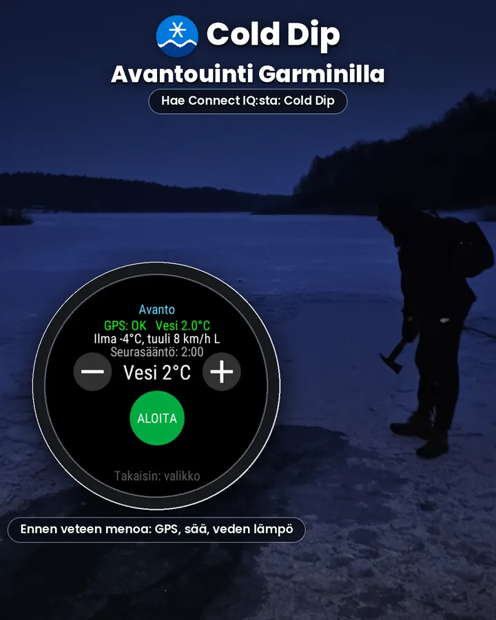
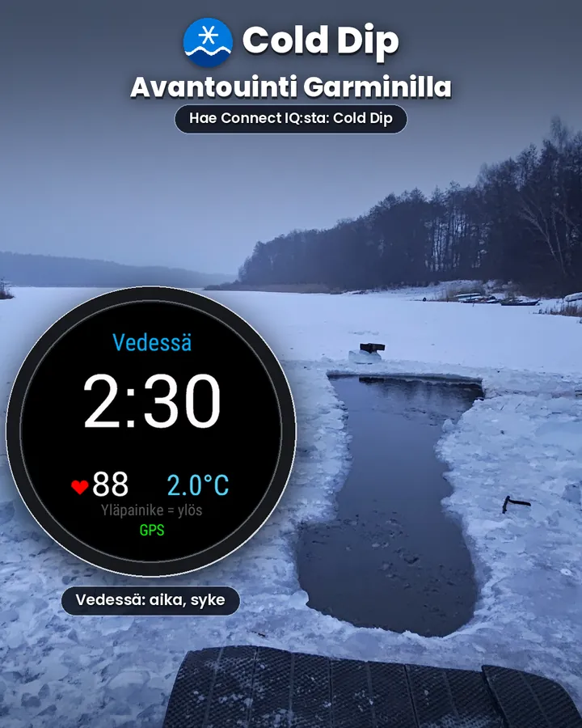
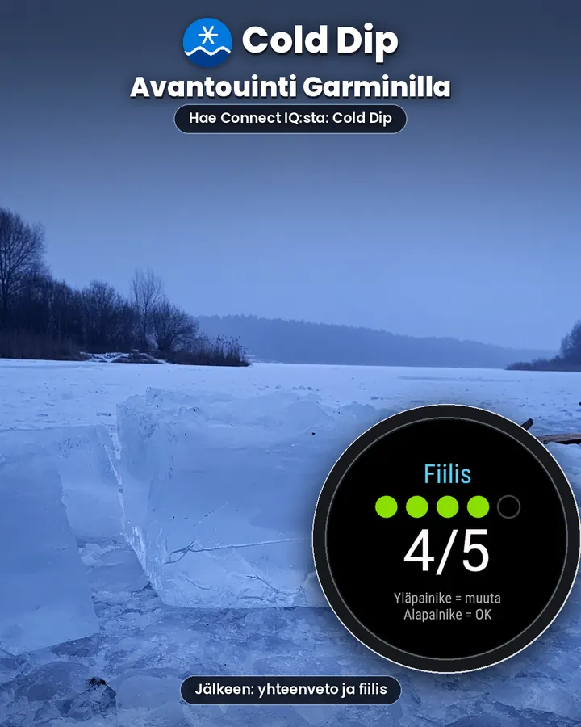
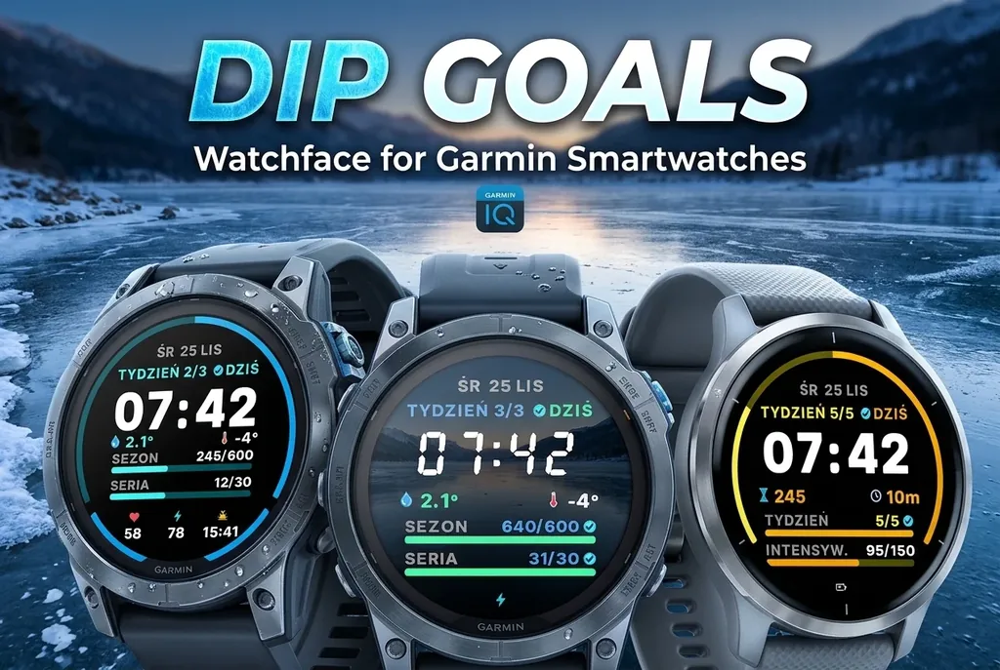
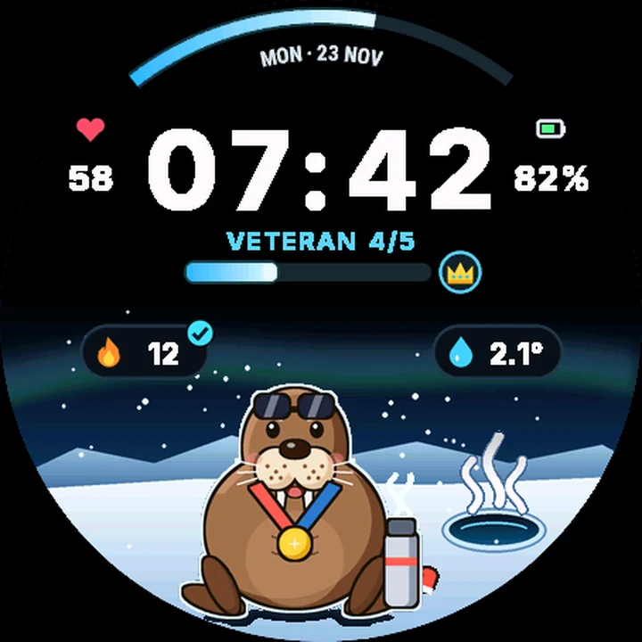
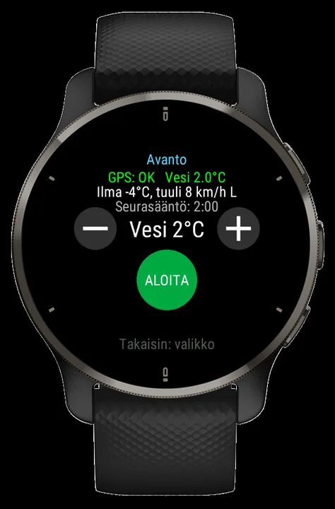
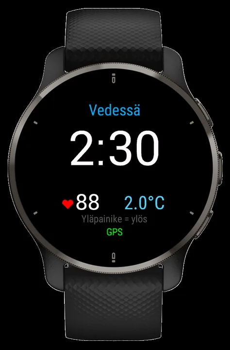
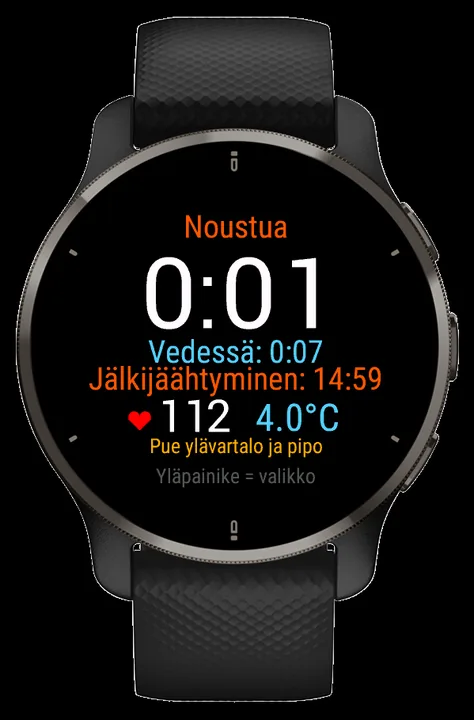

Ennen / vedessä / jälkeen
Yläpainike vaihtaa vaihetta. Aika vedessä vain juoksee — sovellus ei koskaan käske nousemaan ylös. Se on sinun päätöksesi. Edellinen aika on vain viite, ei tavoite, joka pitäisi rikkoa.
Kellossa sovelluksen nimi on Avanto.
Avantouinti ja kylmät pulahdukset tallennettuna oikein — ei uintina.
5,0 Connect IQ:ssa · 1000+ latausta
Tai hae puhelimen Connect IQ -sovelluksessa nimellä ”Cold Dip”.



Alustat
Sovelluksen voi ladata jo Garmin-kelloihin. Amazfit-versio (Zepp OS) on Zepp App Storen tarkistuksessa. Versiot Huaweille, Wear OS:lle ja Apple Watchille ovat tekeillä.
Tehty avantoon, ei uimahalliin. Sinä päätät koko ajan.
Yläpainike vaihtaa vaihetta. Aika vedessä vain juoksee — sovellus ei koskaan käske nousemaan ylös. Se on sinun päätöksesi. Edellinen aika on vain viite, ei tavoite, joka pitäisi rikkoa.
Syke tallentuu koko ajan. Veden lämpötila syötetään käsin ja se tallentuu aktiviteettiin.
Ilman lämpötila, tuntuma ja tuuli — Garminin säästä puhelimessasi.
Uintipaikka tallentuu ja näkyy kartalla Garmin Connectissa.
Jokaisen pulahduksen jälkeen nopea arvio olosta. Lisäksi sykkeen huippu ja palautuminen sekä Body Battery ja stressi ennen veteen menoa.
Kaikki tallentuu Garmin Connectiin omana aktiviteettinaan, ei uintina.
Englanti, puola, saksa, tšekki, slovakki, suomi, norja, ruotsi, espanja, venäjä ja ukraina. Sovellus vaihtuu automaattisesti kellon kielelle.
Forerunner, Fenix, Epix, Enduro, Venu, Vivoactive, Instinct 2 / 3 / E / Crossover ja muut. Ei tueta hyvin vanhoja kelloja, kuten Forerunner 920XT (Connect IQ 1.x).
Valinnaiset lisät ilmaiseen sovellukseen — maksat vain, jos haluat ne
Sovellus, jota jo käytät, pysyy ilmaisena. Pro on niille, jotka haluavat kaudesta enemmän: uusia tapoja treenata, selkeämmän kuvan edistymisestä ja yksinkertaisemman näytön vedessä.
4,99 USD kertaosto, plus ALV siellä missä se lisätään · 7 päivän ilmainen kokeilu
Kokeile Prota 7 päivää ilmaiseksi — sitten 4,99 USD Päivitä Connect IQ:ssa
Sauna kello ranteessa, kylmä suihku, ohjattu saunan ja veden kontrasti tai lyhyt hengitysvalmistelu ennen veteen menoa. Vaiheen vaihdon vahvistat aina painikkeella.
Nimetyt vaiheet ja hälytykset valitseminasi aikoina, ilmaisten minuutti-, puoliaika- ja 3-2-1-hälytysten lisäksi, jotka pysyvät ennallaan.
Kokonaisaika vedessä ja saunassa, lisäennätyksiä ja historia enintään 200 käyntiin. Ilmainen lista näyttää edelleen viimeiset 30.
Pidä 7, 14 tai 30 päivän sarja ja ansaitse merkit 10, 25, 50 ja 100 käynnistä, ensimmäisestä pulahduksesta alle 5°C, kontrastikerrasta sekä saunasta ja pulahduksesta samalla kerralla.
Suuri ajastin, syke- ja kierrossivu sekä teemat (jää, tumma, korkea kontrasti, sauna). Sivua vaihdat Ylös- ja Alas-painikkeilla.
Yksi suuri ajastin vedessä, veden lämpötila ja syke. Yksi nappi aloitukseen ja lopetukseen. Ei lisävalikoita tai näyttöjä. Kytket sen asetuksista, kun Pro on avattu.
Ehdotettu aika veden lämpötilan mukaan, yleisen seuratoimintasäännön mukaan (suunnilleen niin monta minuuttia kuin °C, 0:30–5:00). Se on vain vihje: sovellus ei koskaan lopeta kertaa eikä väitä, että jokin aika on turvallinen.
Uudemmissa kelloissa voit kiinnittää glance-näkymän ja komplikaatiot: päiväputken, viimeisimmän uintiajan ja kauden minuutit. Glance on niissä ilmainen. Komplikaatiot vaativat kellotaulun, joka tukee sovelluskomplikaatioita.
Tallennuksen jälkeen yksinkertainen kortti näyttää ajan, lämpötilan, fiiliksen ja putken. Kuvaa näyttö jakamista varten. Historia-lista jää kelloon, ja Garmin Connect saa edelleen FIT-aktiviteetin. Ei pilvivientiä eikä Instagram-kuvaa — Connect IQ ei itse lähetä valokuvia.
Uinnin jälkeen näet yksinkertaisen sykekäyrän, huipun sekä 1 ja 2 minuutin palautumisarvot. Vain vihje, ei lääkärin neuvo.
Tallenna uintipaikka viimeisimmällä veden lämpötilalla, jonka mittasit siellä. Lähellä alkuunäytössä voi näkyä tuo käynti. Tämä ei ole järven live-lämpötila — Connect IQ:ssa ei ole sellaista API:a.
Jos jätät kellon ulos, ettei se ylikuumene, ota asetus käyttöön: sovellus ei odota rannesykettä saunassa ja voi aloittaa lämmittelyvaiheen jälkeen. Lämmittelyn voi käynnistää myös veden jälkeen valikosta.
| Mitä sisältyy | Ilmainen | Pro ⭐ PRO |
|---|---|---|
| Kaikki, mikä on jo Cold Dip 1.0.3:ssa — neljä profiilia, 30 käynnin historia, ennätykset, ohjattu hengitys, GPS ja muuta | ✓ Kyllä | ✓ Kyllä |
| Sauna, kontrasti ja uudet tilat ⭐ PRO | — | ✓ Kyllä |
| Omat hälytykset vedessä ⭐ PRO | — | ✓ Kyllä |
| Näe koko kausi ⭐ PRO | — | ✓ Kyllä |
| Merkit ja päivittäiset sarjat ⭐ PRO | — | ✓ Kyllä |
| Lisänäytöt ja väriteemat ⭐ PRO | — | ✓ Kyllä |
| Yksinkertainen tila, tehty hanskat kädessä ⭐ PRO | — | ✓ Kyllä |
| Aikavihje — ei raja ⭐ PRO | — | ✓ Kyllä |
| Glance ja kellotaulun komplikaatiot (uudemmat kellot) | Uudemmissa kelloissa | Uudemmissa kelloissa |
| Kertakortti ja historia-lista ⭐ PRO | — | ✓ Kyllä |
| Syke- ja palautumiskaavio ⭐ PRO | — | ✓ Kyllä |
| Tallennetut paikat viimeisimmällä veden lämpötilalla ⭐ PRO | — | ✓ Kyllä |
| Kello saunan ulkopuolella ja lämmittely ⭐ PRO | — | ✓ Kyllä |
| Hinta | Ilmainen | 7 päivän kokeilu, sitten 4,99 USD kerran |
Pro toimii uudemmilla Garmin-kelloilla, joissa on Connect IQ 4 tai uudempi, muun muassa Venu 2 / 3 / 4, Venu Sq 2, Venu X1, vívoactive 5 / 6, Forerunner 165 / 170 / 255 / 265 / 570 / 955 / 965 / 970, fēnix 7 / 8 / 9, epix (Gen 2), Instinct 3 AMOLED, Descent Mk3, Enduro 3 / 4, Approach S50 / S70 / S72 ja MARQ (Gen 2) / (Gen 3). Se ei toimi vanhemmissa tai muistiltaan ahtaammissa malleissa, kuten fēnix 5 / 6, ensimmäinen Venu, vívoactive 3 / 4, Forerunner 55 / 245 / 645 / 945, Instinct 2, Instinct 3 Solar tai Instinct E — ilmainen sovellus toimii niissä edelleen. Tarkista mallisi listasta.
Garmin Connectissa saunakerta tallentuu harjoitukseksi tai meditaatioksi, koska Garminilla ei ole aktiviteettityyppiä ”sauna”.
Aikavihje ei ole lääkärin neuvo eikä tarkoita, että kerta on turvallinen. Kylmä vesi ja sauna sisältävät riskejä. Kysy lääkäriltä, älä mene yksin ja käytä omaa harkintaa. Päätät itse koko ajan.
Hae mallisi. Lista kattaa 133 Cold Dipin kelloa.
Hyvin vanhoja Connect IQ 1.x -kelloja, kuten Forerunner 920XT, ei voida tukea. Pro tarvitsee uudemman kellon — hae mallisi ja tarkista.
Kellotaulut
Mursukellotaulut avantouintiin. Mors – tarcza muuttuu sään mukaan. Mors Level nousee kausiminuuttien myötä. Dip Goals ja Afterdrop ovat tulossa pian.


Animoitu mursu-kellotaulu avantouintiin
3,99 USD 24 tunnin ilmainen kokeilu
Tulossa pian Connect IQ -kauppaan Lataa Connect IQ:sta Lue lisää
Pelillistetty mursu-kellotaulu avantouintiin
2,99 USD 7 päivän ilmainen kokeilu
Tulossa pian Connect IQ -kauppaan Lataa Connect IQ:sta Lue lisää

Tavoiterenkaat viikon avantouinneille, kauden minuuteille ja putkelle, plus veden ja ilman lämpötila, Body Battery ja syke. Neljä teemaa.

Ilmainen Garmin-kellotaulu isolla kellonajalla ja 3 kentällä. Se ei koskaan lukitu. Valinnainen Afterdrop Pro avaa Cold Dip -kentät, ilman lämpötilan, auringonnousun ja -laskun sekä 4 lisäteemaa.
Animoitu mursu-kellotaulu avantouintiin
Mursu reagoi säähän: aallot hyvällä säällä, pipo pakkasella, lumen pudistus ja loikka avantoon, kun on avantokeli. Aika, päiväys, ilman lämpötila, sää, syke, askeleet ja akku. Animaatio toistuu, kun herätät kellon — ei koskaan always-on-tilassa.
3,99 USD kertaosto, plus ALV siellä missä se lisätään
AMOLED-kelloissa mursu liikkuu, kun nostat ranteen — ei koskaan always-on-tilassa.
Täysvärianimaatio AMOLED-kelloissa, kuten Venu 2, 2 Plus, 3 ja 4, vívoactive 5 ja 6, Forerunner 165, 170, 265, 570, 965 ja 970, Fenix 8 ja 9 (AMOLED), Epix 2, Descent Mk3, D2 Mach, Approach S70 ja S72, Instinct 3 AMOLED sekä MARQ 2 ja 3.
Tätä kellotaulua ei ole MIP-kelloissa eikä malleissa, joissa on vähemmän muistia, kuten Fenix 5 Plus, Fenix 6 ja 7, Fenix Solar, Forerunner 245, 255, 745, 945 ja 955, Enduro, Descent Mk2, vívoactive 4, Venu 1 ja ensimmäisen sukupolven MARQ. Nämä näytöt eivät pysty näyttämään täysvärianimaatiota.
Pelillistetty mursu-kellotaulu avantouintiin
Mursukumppanisi nousee 5 tason läpi, kun kauden kylmävesiminuuttisi kasvavat — livenä ilmaisesta Cold Dip -sovelluksesta. Talvella höyryävä avanto, kesällä ranta, uintiputken merkki, veden lämpötila, syke, akku ja selkeä always-on-näyttö. Herätysanimaatio toistuu, kun herätät kellon — ei koskaan always-on-tilassa.
2,99 USD kertaosto, plus ALV siellä missä se lisätään · 7 päivän ilmainen kokeilu
Jotta taso nousee livenä — minuuttien, uintiputken ja veden lämpötilan mukaan — asenna ilmainen Cold Dip -sovellus. Ilman sitä nämä kentät näyttävät kellon tietoja.
NOVIISI 1/5


5 tasoa
1/5
0–29 min tällä kaudella
2/5
30–119 min tällä kaudella
3/5
120–299 min tällä kaudella
4/5
300–599 min tällä kaudella
5/5
600+ min tällä kaudella



Täysvärianimaatio 51 AMOLED-kellossa, kuten Venu 2, 2 Plus, 3 ja 4, vívoactive 5 ja 6, Forerunner 165, 170, 265, 570, 965 ja 970, Fenix 8 ja 9 (AMOLED), Epix 2, Descent Mk3, D2 Mach, Approach S70 ja S72, Instinct 3 AMOLED sekä MARQ 2 ja 3. Always-on käyttää hyvin harvoja valaistuja pikseleitä.
Selkeä, staattinen taulu 19 MIP-kellossa, kuten Fenix 7, Fenix 8 Solar, Forerunner 255 ja 955 sekä Enduro 3 ja 4. Yhteensä Mors Level tukee 70 Garmin-kelloa, 11 kielellä.
Keskiarvo 5,0 ★ Connect IQ Storessa ja yli 1000 latausta.
★★★★★
„Super, pierwsze morsowanie z apką za mną, działa! Tego mi było trzeba! Dzięki”
Mahtavaa, ensimmäinen avanto sovelluksen kanssa takana, toimii! Juuri tätä tarvitsin! Kiitos (Käännetty puolasta)
★★★★★
„Rewelacyjna apka. Przetestowana podczas morsowania. Wszystko działa dobrze”
Loistava sovellus. Testattu avantouinnissa. Kaikki toimii hyvin (Käännetty puolasta)
★★★★★
„Działa nawet na starszym Garminie za co duże brawa dla autora”
Toimii jopa vanhemmassa Garminissa — isot aplodit tekijälle (Käännetty puolasta)
★★★★★
„Świetna sprawa!💙”
Hieno juttu!💙 (Käännetty puolasta)
Yksi avantouinti alusta tallennukseen — oikeat näkymät Garmin-simulaattorista.



Cold Dipin viimeisimmät versiot.
Vedestä noustua syötetty veden lämpötila koskee nyt vain kyseistä sessiota. Kysely ohittaa vahingossa tehdyn painalluksen heti noston jälkeen. Vakaampi: täysi muisti tai tallennusvirhe ei enää jumita sovellusta, eikä vanhemman kellon tukematon kenttä tai laji enää estä aloitusta. Korjattu puolan- ja venäjänkieliset lämmittelyvinkit.
Korjattu kaatuminen noin 20 s tallennuksen jälkeen (ilmoitettu Venu 3S:llä). Vedestä noustua kello kysyy veden lämpötilan; ilmainen ja poistettavissa asetuksista.
Cold Dip Pro on täällä. Kaikki 1.0.3:sta pysyy ilmaisena. Pro on valinnainen: kertamaksu 4,99 USD ja 7 päivän ilmainen kokeilu. Uudet tilat: sauna, kylmä suihku, ohjattu kontrasti ja hengitysvalmistelu; omat hälytykset ja nimetyt vaiheet vedessä; kausitilastot, merkit ja päivittäiset putket (7 / 14 / 30); lisänäytöt, väriteemat ja yksinkertainen tila.
133 kelloa, mukana Instinct 2, Instinct 2S, Instinct 2X, Instinct 3 Solar, Instinct E ja Instinct Crossover, sekä uusi mustavalkoinen asettelu MIP-näytöille.
126 kelloa, mukana Forerunner 55.
105 kelloa, mukana suorakaiteen muotoiset asettelut Venu X1:lle ja Venu Sq 2:lle.
Ensimmäinen julkaisu.
“Działa idealnie” (Toimii täydellisesti)
Yli 10 minuuttia 5°C:ssa — veden lämpötila kellossa, ja kaikki tiedot tallentuivat Garmin Connectiin.
Muutama asia, jota asennuksen jälkeen kysytään usein.
Asenna se puhelimen Connect IQ Store -sovelluksesta — ei Google Playsta tai App Storesta. Kellosta löydät Cold Dipin (Avanto) aktiviteetti- / sovellusluettelosta.
Profiilissa „Avanto” säädät sen aloitusnäytön painikkeilla − / +. Muissa profiileissa se käy valikosta: „Veden lämpö käsin”. Jos näet vedessä merkin „--°C”, lämpötilaa ei ole vielä asetettu.
Avaa aktiviteetti, siirry Tilastot-välilehdelle ja vieritä kohtaan „Connect IQ”. Siellä ovat syke, veden lämpötila, sää, fiilis ja vaiheiden ajat. Yleiskatsaus-näytön ruudut määrää Garmin — sovellus ei voi niitä muuttaa.
Ei. Kello ei voi mitata ruumiinlämpöä. Anturi näyttää kellon oman lämpötilan, johon vaikuttavat iho ja ilma. Cold Dipissä veden lämpötila syötetään käsin.
Kalorit arvioi kello sykkeen perusteella, Cold Dip ei laske niitä.
Kyllä. Tallennus tapahtuu kellossa, joten puhelin voi jäädä laukkuun. Ilman puhelinta jää pois vain sää, koska se tulee puhelimen Garmin-säästä. Aktiviteetti synkronoituu Garmin Connectiin, kun kello taas yhdistää puhelimeen. Puhelinta tarvitset asennukseen ja Pron avaamiseen.
Kello ei itse pysty mittaamaan veden lämpötilaa — sen anturi mittaa kellon lämpöä, johon iho ja ilma vaikuttavat. Cold Dipissä asetat veden lämpötilan painikkeilla − / + (tai valikosta), ja vedestä noustuasi sovellus kysyy sitä. Jos sinulla on paritettu Garmin Tempe -anturi, sovellus käyttää sen lukemaa. Kellon anturia tai ilman lämpötilaa ei koskaan esitetä veden lämpötilana.
Pro on vapaaehtoinen, ja sovellus pysyy ilmaisena. Pro tuo saunan, kylmän suihkun, ohjatun kontrastin ja hengitysvalmistelun, omat hälytykset, kauden tilastot, merkit ja päiväputket, lisänäkymät ja teemat, hanskoilla helpon yksinkertaisen tilan, aikavihjeen veden lämpötilan mukaan (vihje, ei koskaan raja) ja sykekäyrän. Kertamaksu 4,99 USD 7 päivän ilmaisen kokeilun jälkeen. Kaikki Pro-ominaisuudet.
Maksut hoitaa KiezelPay. Kun haluat pitää Pron, kello näyttää 6-numeroisen koodin. Syötä se osoitteessa kzl.io/cold-dip-pro (maksullisissa kellotauluissa: kzl.io/code) ja maksa kerran. Pidä puhelin lähellä, Garmin Connect auki ja Bluetooth päällä — kello avautuu tämän yhteyden kautta, yleensä 5 minuutissa.
Yli 130 Garmin-kelloa, joissa on Connect IQ: Forerunner, fēnix, epix, Enduro, Venu, vívoactive, Instinct 2 / 3 / E / Crossover ja muita. Pro vaatii Connect IQ 4:n tai uudemman. Hyvin vanhoja malleja, kuten Forerunner 920XT, ei tueta. Tarkista mallisi.
Amazfit-versio (Zepp OS) on valmis ja odottaa tarkastusta Zepp App Storessa. Versiot Huaweille, Wear OS:lle (Samsung Galaxy Watch, Pixel Watch) ja Apple Watchille ovat työn alla — ei vielä päivämääriä. Tilaa ilmoitus.
Kylmä vesi on vakava asia. Nämä ovat yleisiä turvallisuusmuistutuksia, eivät lääkärin neuvoja. Sinä päätät, milloin menet veteen ja milloin nouset pois.
Mene aina jonkun kanssa, joka voi auttaa, jos jotain tapahtuu, tai varmista, että joku rannalla pitää sinua silmällä.
Jos kylmä vesi on sinulle uutta, totuttele siihen vähitellen sen sijaan, että jäisit heti pitkäksi aikaa hyvin kylmään veteen.
Moni aloittaa vain lyhyellä ajalla vedessä ja pidentää sitä hitaasti. Ei ole aikaa, jonka “pitäisi” kestää.
Poistu vedestä heti, kun tunnet, että on aika — voimakkaassa tärinässä, kivussa, puutumisessa, hämmennyksessä tai yksinkertaisesti kun se riittää. Cold Dip ei koskaan käske sinua pois vedestä eikä aseta tavoiteaikaa. Edellinen aika on vain viite.
Kuivaa itsesi ja lämmittele mahdollisimman pian vedestä noustuasi. Pidä lämpimät vaatteet valmiina jo ennen veteen menoa.
Vedestä noustuasi ydinlämpötila voi vielä laskea hetken, kun viileämpi veri palaa iholta ja raajoista. Tätä kutsutaan usein afterdropiksi. Jatka lämmittelyä, etene rauhassa ja odota, että olosi on oikeasti hyvä, ennen kuin ajat autoa tai pyöräilet.
Cold Dip on tallennussovellus, ei lääkinnällinen laite, eikä se anna lääketieteellisiä neuvoja. Se ei voi kertoa, onko kylmään veteen meno sinulle turvallista. Jos sinulla on sairaus, olet raskaana tai olet epävarma, keskustele ensin alan ammattilaisen kanssa.
Lyhyitä, käytännöllisiä tekstejä avantouimarilta. Yleisiä vinkkejä, ei lääketieteellistä neuvontaa.
Suosittu seurojen nyrkkisääntö veden lämpötilan mukaan — ja miksi se ei ole turvallinen raja.
Miksi noston jälkeen voi tulla vielä kylmempi ja miten lämmitellä rauhassa.
Ensimmäiset kerrat vaihe vaiheelta: seuraa, lyhyet ajat, lämpimät vaatteet valmiina.
Lyhyt katsaus yhteen avantoon: aloitusnäytöstä tallennukseen Garmin Connectissa.
Cold Dip tulee myös muihin kelloihin. Jätä sähköpostisi ja valitse kellosi — kirjoitan kerran, kun versio on valmis.
Säilytän osoitteesi vain tätä yhtä viestiä varten. Ei uutiskirjettä. Kirjoita minulle, niin poistan sen. Mieluummin tavallinen sähköposti? lukasz.pszenny@gmail.com
Vedätkö avantouintiryhmää, seuraa tai fanisivua? Suosittele Cold Dipiä jäsenillesi. Sovellus on ilmainen, ja alla olevat kuvat ja teksti ovat valmiita julkaistaviksi.
Kirjoita minulle, niin seuranne saa jäsenille oman alennuskoodin Prohon.
Pukuhuoneeseen, saunaan tai seuran ilmoitustaululle. QR-koodi vie tälle sivustolle.
Garmin-kellotaulu seuranne logolla, tilauksesta. Kerro, mitä mielessänne on.
Onko sinulla idea Garmin-sovelluksesta tai kellotaulusta? Tehdään se yhdessä. Kirjoita minulle ja kerro, mitä kelloa käytät.
Jos käytät jo Cold Dipiä, arvostelu Connect IQ:ssa auttaa paljon — kiitos!
Cold Dip on ilmainen. Jos se auttaa avannoissasi, voit tukea sen taustalla olevaa työtä.
Tarjoa kahvi